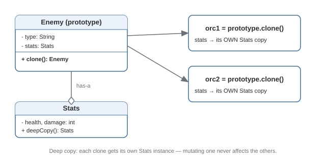

Prototype Pattern
Creates new objects by copying an existing instance (a "prototype") rather than constructing from scratch.
Theory
The problem, in plain terms
You've got an Enemy in a game that took real work to set up — loaded a 3D model, computed pathfinding data, initialized stats from config. You now need fifty more of the exact same type. Calling new Enemy() fifty times and re-running all that setup is wasteful — you already have a fully-configured object sitting right there. What you want is to copy the one you have.
Prototype formalizes "copy an existing object" as the creation mechanism itself. Any object that supports cloning implements a clone() method, and creating a new instance means calling .clone() on a prototype rather than invoking a constructor.
How it's built
An object implements a clone() method that returns a copy of itself. The critical design decision is shallow vs. deep copy: a shallow copy duplicates the object's own fields but leaves any reference fields pointing at the same nested objects as the original. A deep copy recursively clones referenced objects too, so the copy is fully independent.
Deep-copy any mutable, referenced field (like a nested Stats object) inside clone() — give each clone its own independent copy of anything it might mutate.
Doing a shallow copy by default and forgetting about it. Mutate a nested object through the copy, and you'll see that mutation reflected in the "original" too — a subtle bug that only shows up once something actually gets mutated.
Where it bites you
Deep-cloning an object graph with circular references, or objects wrapping external resources (open file handles, DB connections, live sockets), is genuinely tricky — those usually can't be meaningfully cloned at all and need special-casing, like re-establishing a fresh connection instead of copying the handle.
Diagram

When to Use
- Construction from scratch is expensive (I/O, heavy computation) and you have a similar object to copy from.
- You need to create objects without knowing their exact concrete class ahead of time.
- You need many near-identical objects that differ only slightly.
- Construction is cheap — a plain constructor is simpler and just as fast.
- The object graph has circular references or wraps live external resources.
Real-World Examples
- Java's
Object.clone()/Cloneable— baked directly into the language. - JavaScript's prototypal inheritance —
Object.create(proto)creates a new object using an existing one as its prototype. - Game engines — spawning many similar enemies/particles by cloning a pre-configured template instead of re-running full initialization.
- "Duplicate" in Google Docs/Sheets — clones an existing, fully-formatted document rather than rebuilding formatting from scratch.
git clone— copying an existing, fully-initialized repository rather than reconstructing it from nothing.
Interview Questions
Click a question to reveal the answer.
What's the difference between a shallow copy and a deep copy, concretely?
A shallow copy duplicates the object's own fields, but any field that's a reference to another object still points at the same nested object as the original. A deep copy recursively clones those nested objects too. Mutate a nested object through a shallow copy, and that change is visible through the original as well — that's the bug signature to watch for.
When would you choose Prototype over just calling the constructor?
When construction is expensive — heavy computation, file/network I/O, complex initialization — and you already have a similar, fully-built object to copy from. Also useful when you need to create an object without knowing its exact concrete class, since cloning works polymorphically off whatever prototype instance you were handed.
What are the practical pitfalls of implementing clone() in Java specifically?
Object.clone() performs a shallow copy by default, and its checked-exception, Cloneable-marker-interface design is famously awkward — "Effective Java" recommends avoiding it in favor of a copy constructor or a static factory method that does the copying explicitly. If you do implement clone(), you must manually deep-copy any mutable reference fields yourself.
How would you handle cloning an object that holds a live resource, like a database connection?
You generally don't clone the resource itself — you clone the object's configuration/state and re-establish a fresh connection using that state. Trying to literally copy a live socket or file handle doesn't make sense; the clone should re-acquire its own resource rather than share the original's.
Code & Output
Same pattern, four languages. Every output shown here was captured from a real run — note that mutating orc1 never affects orc2 or the prototype, proving the deep copy works.